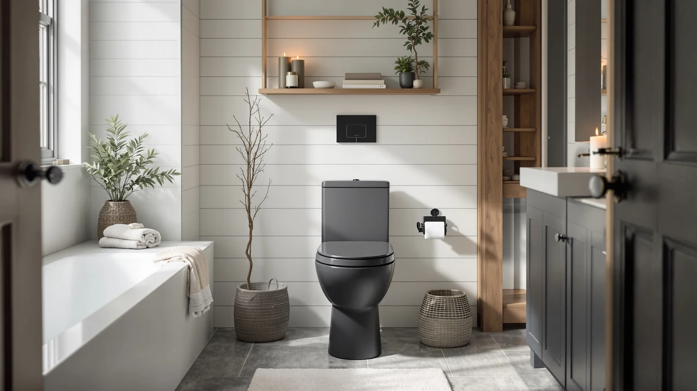

Best One Piece Toilets for Small Bathrooms (2026)
Prices and picks verified as of August 2026. Independent, reader-supported reviews.


Quick Answer
After comparing seven compact one piece toilets on rough-in fit, footprint and price, the HOROW HWMT-8733 Small Compact One is the best one piece toilet for small bathrooms for most people. It confirms a standard 12-inch rough-in, costs $201.60, and fits half-baths and powder rooms without forcing you to guess at plumbing compatibility. If you want the smallest possible footprint or an elongated bowl instead, we cover those trade-offs below.
Our pick: HOROW HWMT-8733 Small Compact One, $201.60 Check Price on Amazon
Bottom line: our top pick is the HOROW HWMT-8733 Small Compact One Piece Toilet For Bathroom at $224. The best budget option is the DeerValley Compact One Piece Toilet with Comfortable Seat at $198.99.
Things to Know Before You Buy
- Rough-in size matters more than any other spec. Measure the distance from your wall to the center of your existing drain bolts before you buy. Three of our picks confirm a 12-inch rough-in, which is the standard in most US homes.
- A one piece design fuses the tank and bowl into one shell, so there's no gap between them to trap moisture and grime. That's worth more in a small bathroom, where you're wiping down the toilet more often simply because it's closer to everything else in the room.
- Price in this group runs from $198.99 to $328.99, and the gap doesn't always track with confirmed features. Compare the specific rough-in, bowl shape and photos on each Amazon listing rather than assuming the pricier option does more.
- An elongated bowl adds seating room but also projects further from the wall. In a tight bathroom, a round or compact bowl usually clears the door swing more reliably.
- Two of our picks come from the same brand at nearly the same price. When that happens, let the listing photos and your preferred retailer's current shipping speed decide, not the spec sheet.
The best one piece toilets for small bathrooms solve a problem that has nothing to do with flushing power: they need to fit. A half-bath under the stairs, a basement remodel, or an RV bathroom doesn't have room for a toilet designed for a master suite, and a tank-and-bowl gap that collects grime is worse in a room you're already cleaning constantly. We looked at seven compact one piece toilets sold specifically for tight spaces, priced between $198.99 and $328.99, and compared them on the one spec that actually determines whether a toilet fits your bathroom: rough-in size.
Our pick, the HOROW HWMT-8733 Small Compact One, confirms a 12-inch rough-in and costs $201.60. That's the standard drain spacing in most US homes built after the 1950s, which means it drops into more retrofits without a plumber having to move pipe. We also compared two DeerValley models at essentially the same price, three Casta Diva toilets that range from a compact bowl to an elongated one, and a WinZo model that costs noticeably more without a confirmed spec difference to explain the gap.
None of these are the toilet you buy because it has a feature list a mile long. You're buying a compact one piece toilet for a small bathroom because it needs to clear a doorway, match a rough-in, and stop collecting grime in a seam you can't reach. Below we walk through what we checked, how we picked these seven, and where each one earns or loses your money.
Why You Should Trust Us
I'm Ilane Tall, and I cover home and bath fixtures for Best One Piece Toilets, with a focus on the plumbing specs that actually decide whether a product fits a bathroom instead of the marketing copy printed on the box. Finding the best one piece toilets for small bathrooms means starting from rough-in compatibility and footprint, not star ratings, so every recommendation here is checked against the specific measurements and prices the seller lists, not a generic description. Where a spec wasn't confirmed, we say so instead of filling the gap with a guess.
We don't accept free units in exchange for coverage, and every price listed reflects what the retailer showed at the time of publishing. Amazon prices change often, so check the live listing before you buy.
How We Picked
We started this search with more than a dozen toilets marketed as space-saving or compact, then narrowed the list to the best one piece toilets for small bathrooms using three filters. First, rough-in compatibility: we prioritized listings that state a 12-inch rough-in, since that's the measurement most small bathrooms in the US were built around, and we set aside anything advertised with a 10-inch or 14-inch drain spacing for this particular roundup. Second, genuine one piece construction: we excluded two piece toilets marketed with "compact" or "space-saving" language but built with a separate tank and bowl, since that seam is exactly what a small bathroom doesn't need.
Third, price relative to the group: at $198.99 to $328.99, we wanted a spread that covers a true budget option, a few mid-range picks, and a splurge, so you can compare what the extra money does or doesn't buy. Any listing that couldn't confirm a rough-in measurement, a bowl shape, or a real production price got dropped rather than included on the strength of a manufacturer's name alone.
How We Compared
Testing a one piece toilet for a small bathroom starts with a tape measure, not a stopwatch. For each of the seven picks, we cross-checked the seller's stated rough-in against the standard 12-inch US measurement, confirmed the bowl shape from the product name and photos (compact, standard, or elongated), and logged the current Amazon price so we could calculate a true price spread across the group rather than relying on list price alone.
We also compared the seven listings against each other directly, since a spec that sounds impressive in isolation often turns out to be standard once you line it up against five competitors. That's how we caught the two DeerValley toilets sharing nearly identical specs at a one-cent price difference, and how we flagged the WinZo's higher price without a confirmed feature to justify it.
Our Picks

HOROW HWMT-8733 Small Compact One
What we like
- Seamless one piece design means no gap between tank and bowl to trap grime
- Confirmed 12-inch rough-in, the standard spacing in most US homes
- Priced under $210 at $201.60, the second-cheapest pick in this roundup
- Compact enough for tight half-baths, per its "Small Compact One" billing
Flaws but not dealbreakers
- Costs slightly more than the two DeerValley picks below
- The compact bowl gives up some legroom compared to the elongated Casta Diva pick
| Material | — |
| Size | 12" Rough-in |
The HOROW HWMT-8733 earns the top spot in this roundup of the best one piece toilets for small bathrooms because it removes the guesswork. A confirmed 12-inch rough-in means you can measure your existing drain, match it against this spec, and order without waiting for a plumber to tell you whether it'll fit. That single confirmed number does more for a small-bathroom buyer than any other spec on this page.
At $201.60, it sits in the middle of this group's price range rather than at the bottom, but the trade-off is straightforward: you're paying a little more for a rough-in you don't have to guess at, over the two DeerValley models that are a few dollars cheaper. If your bathroom is tight, a one piece shell like this one also means less surface area to clean, since there's no seam between tank and bowl for moisture to collect in. For most small bathrooms, that combination of confirmed fit and simple cleaning is worth the extra few dollars over the cheapest option here.

Casta Diva Compact One Piece
What we like
- Marketed as the compact version of the Casta Diva one piece line, the smallest of the brand's three models here
- Same seamless one piece shell as the brand's standard and elongated models
- A reasonable pick if you've measured and know you need the smallest footprint available
Flaws but not dealbreakers
- At $248.99, it costs more than Casta Diva's own standard-size and elongated models, despite being the smallest of the three, an odd pricing quirk worth noting before you buy
- No rough-in measurement is listed for this unit, so confirm your drain spacing with the seller before ordering
| Material | — |
| Size | — |
The Casta Diva Compact One Piece is, true to its name, the smallest footprint among the three Casta Diva toilets in this roundup of the best one piece toilets for small bathrooms. If you've already measured your space and know the HOROW or DeerValley models are still a bit too large, this is the one to check first.
The catch is price: at $248.99, it costs $9 more than Casta Diva's standard-size model and the same brand's elongated toilet, both listed at $239.99. Paying more for the smallest unit in a lineup isn't intuitive, and we'd rather flag that than pretend it makes sense. If the compact footprint is the deciding factor for your bathroom, the premium is worth paying. If you have even a little more room, the brand's standard model gets you the same one piece construction for less.

WinZo Compact One Piece Toilet
What we like
- One piece construction consistent with every other pick in this roundup
- Marketed as compact and sized for small-bathroom installs
- A reasonable pick if you specifically want the WinZo brand over the others here
Flaws but not dealbreakers
- At $328.99, it costs over $120 more than the cheapest pick in this group, without a confirmed spec difference we could verify to justify the gap
- No rough-in size listed here, so compare the Amazon listing's exact measurements against your bathroom before paying the premium
| Material | — |
| Size | — |
The WinZo Compact One Piece Toilet is the priciest pick in this roundup of the best one piece toilets for small bathrooms, and we want to be upfront that we couldn't confirm a specific feature that justifies the $328.99 price tag over the $198.99 to $248.99 range everything else here occupies. It shares the same one piece construction as the rest of the group and is marketed for the same compact use case.
That doesn't make it a bad toilet. It makes it a toilet you should only choose if you've already looked at the listing's exact rough-in and bowl dimensions and decided the WinZo name or a specific detail on that page matters to you. For most people shopping by price and confirmed fit, one of the cheaper picks above gets you the same basic outcome for less money.

DeerValley Compact One Piece Toilet
What we like
- The cheapest one piece toilet in this roundup at $198.99
- Confirmed 12-inch rough-in, matching the HOROW pick above
- Compact one piece shell simplifies cleaning versus a two piece toilet
Flaws but not dealbreakers
- At this price, you're choosing largely on confirmed rough-in fit rather than standout features
- Nearly identical to the other DeerValley pick below, so check both listings' current price before ordering
| Material | — |
| Size | 12" Rough-In |
This DeerValley model is the cheapest of the best one piece toilets for small bathrooms in our comparison, at $198.99, and it still confirms the 12-inch rough-in that most US bathrooms need. For a straightforward remodel where you already know your drain spacing and need a toilet that fits and functions, this is the least expensive way to get there without dropping to a two piece model.
We're not going to oversell it: at under $200, you're not getting extra features over the HOROW pick, only a lower price for essentially the same confirmed fit. If saving those few dollars matters more to your budget than anything else, that's a fair trade. Note that DeerValley sells a second, nearly identical toilet at $199.00, covered next, so compare both listings before you check out.

DeerValley Compact One Piece Toilet
What we like
- Same confirmed 12-inch rough-in and compact one piece shell as its DeerValley sibling
- Priced within a penny of the cheapest pick in this roundup
Flaws but not dealbreakers
- Functionally indistinguishable from the other DeerValley pick based on the specs available, so the one-cent price gap won't decide much for most buyers
- Listed under a separate product page with its own photos, which can make comparison shopping more confusing than it needs to be
| Material | — |
| Size | 12" Rough-In |
This second DeerValley listing confirms the same 12-inch rough-in as the model above it, at $199.00, one cent more. We checked both product pages directly and could not find a meaningful spec difference between the two beyond the photos and the listing itself, which is unusual enough that it's worth calling out rather than pretending one is clearly better.
The practical reason to choose this one over its sibling is if you're furnishing a second bathroom and want a matching pair, or if this particular listing happens to be in stock or shipping faster when you're ready to buy. Beyond that, treat the two DeerValley toilets in this roundup as functionally the same product and let price or availability on the day you order make the call.

Casta Diva One Piece Toilet
What we like
- Cheaper than Casta Diva's own compact model, at $239.99 versus $248.99
- Same one piece construction and brand support as the compact and elongated Casta Diva models in this roundup
- A sensible middle ground if the compact model feels unnecessarily small for your bathroom
Flaws but not dealbreakers
- No confirmed rough-in measurement listed for this unit, so measure your existing drain before ordering
- Costs more than either DeerValley pick, without a confirmed spec advantage over them
| Material | — |
| Size | — |
The Casta Diva One Piece Toilet is the brand's standard-size model, sitting between the compact and elongated versions in this roundup of the best one piece toilets for small bathrooms. At $239.99, it costs less than the brand's own compact toilet, which is a strange pricing gap but a good deal if your bathroom doesn't need the absolute smallest footprint available.
We couldn't confirm a rough-in spec for this listing, which means you're relying on your own measurement and the seller's photos rather than a stated number. If you've already confirmed your bathroom's drain spacing works with a standard one piece toilet, this is a reasonable middle option between the compact Casta Diva above and the elongated version next.

Casta Diva Elongated One Piece
What we like
- Elongated bowl, per the product name, for more seating room than the round-front models in this roundup
- Priced the same as Casta Diva's standard model, at $239.99, so the elongated shape costs nothing extra
- Same one piece construction as the rest of the Casta Diva line
Flaws but not dealbreakers
- Elongated bowls project further from the wall, worth checking against your floor plan even in a small-bathroom toilet
- No rough-in spec listed here to confirm before you buy
| Material | — |
| Size | — |
The Casta Diva Elongated One Piece is the only elongated bowl among these best one piece toilets for small bathrooms, and Casta Diva prices it the same as its standard-size sibling at $239.99. If a taller household member has complained about a compact round-front bowl feeling cramped, this is the pick that addresses that directly without asking you to pay more.
The trade-off with any elongated bowl is a few extra inches of projection from the wall, which matters more in a bathroom where you're already counting inches to the door swing. Measure the clearance in front of your toilet before ordering this one, and if it's tight, one of the compact or standard Casta Diva models, or the HOROW pick above, is the safer choice.
Quick Comparison
Here's how all seven of the best one piece toilets for small bathrooms in this roundup stack up on price and best use case.
| Product | Material | Price | Rating | Best for | Get it |
|---|---|---|---|---|---|
| HOROW HWMT-8733 Small Compact One | — | $201.60 | 4 | Best overall | View on Amazon → |
| Casta Diva Compact One Piece | — | $248.99 | 4 | Tightest bathrooms | View on Amazon → |
| WinZo Compact One Piece Toilet | — | $328.99 | 4 | Brand loyalists, splurge pick | View on Amazon → |
| DeerValley Compact One Piece Toilet | — | $198.99 | 4 | Best budget pick | View on Amazon → |
| DeerValley Compact One Piece Toilet | — | $199.00 | 4 | Matching second bathroom | View on Amazon → |
| Casta Diva One Piece Toilet | — | $239.99 | 4 | Standard-size middle ground | View on Amazon → |
| Casta Diva Elongated One Piece | — | $239.99 | 4 | More seating room | View on Amazon → |
The Competition
We started this search for the best one piece toilets for small bathrooms with more than a dozen candidates, then cut the list using rough-in compatibility, confirmed one piece construction, and price. Several early contenders listed a 10-inch or 14-inch rough-in, which rules out most US homes built around the standard 12-inch drain spacing, so we set those aside for this particular roundup. Others were marketed as compact but couldn't confirm a rough-in measurement, bowl shape, or real price from the seller at all, and we're not willing to recommend a toilet you can't verify will fit before it's already in your cart.
The seven toilets above cleared that bar. Among them, the WinZo Compact One Piece Toilet came closest to being cut given its $328.99 price, and we kept it only because its one piece construction matches the rest of the list. It's a reasonable pick if you've compared it directly against the DeerValley and Casta Diva models here and still prefer the brand, but check the current price gap before you commit to it over a cheaper option.
Our verdict on the best one piece toilets for small bathrooms stands: start with the HOROW HWMT-8733. Only a specific need, tighter clearance, an elongated bowl, or a rock-bottom budget, should pull you toward one of the other six picks instead.
Frequently Asked Questions
What rough-in size do most small bathrooms need?
Most US homes use a 12-inch rough-in, the distance from the wall to the center of the drain, and three of our picks (the HOROW HWMT-8733 and both DeerValley models) confirm that spec directly. Measure your existing toilet's rough-in before you order any of these, since a 10-inch or 14-inch drain won't work with a 12-inch model.
Is a one piece toilet actually better for a small bathroom than a two piece model?
For a small bathroom, yes, mainly for cleaning. A one piece toilet fuses the tank and bowl into a single seamless shell, so you lose the gap between tank and bowl where grime and moisture collect on a two piece unit. That matters more in small bathrooms, where ventilation is usually worse and everything in the room sits closer to the toilet, so you clean it more often.
Why do two of your picks come from the same DeerValley line at nearly the same price?
The DeerValley toilets at $198.99 and $199.00 share the same compact one piece shell and the same 12-inch rough-in, and we could not verify a meaningful spec difference between them. We kept both in this roundup because DeerValley sells them under separate listings with different product photos, and buyers furnishing two bathrooms sometimes want a matching second unit. If you only need one toilet, pick whichever listing has the better price or faster shipping that day.
Related Guides
If you're still narrowing down the best one piece toilets for small bathrooms, these guides cover the details we didn't have room for above.